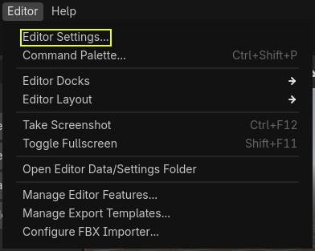
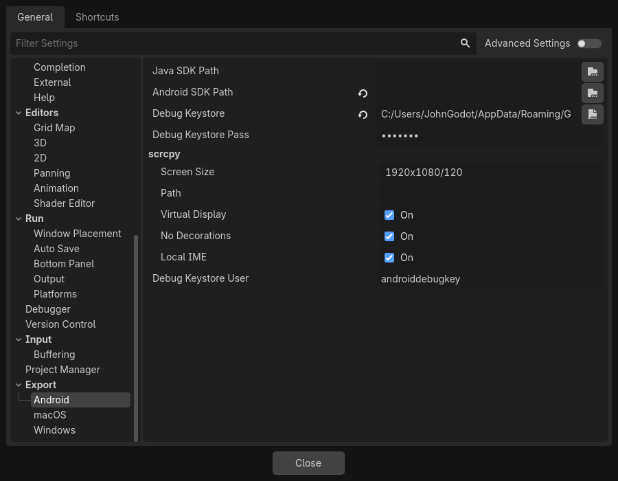
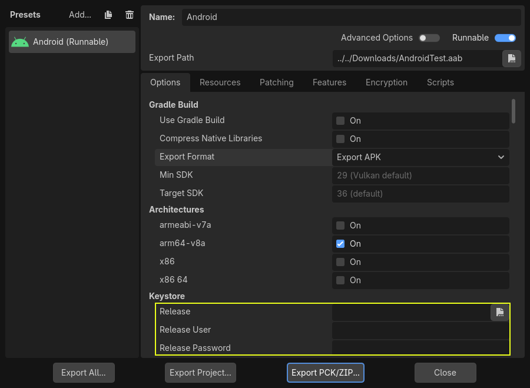

Exporting for Android
See also
This page describes how to export a Godot project to Android. If you're looking to compile export template binaries from source instead, read Compiling for Android.
Exporting for Android has fewer requirements than compiling Godot for Android. The following steps detail what is needed to set up the Android SDK and the engine.
Attention
Projects written in C# can be exported to Android as of Godot 4.2, but support is experimental and some limitations apply.
Setup on Android
When exporting to Android from the Android editor, you do not need to install OpenJDK or the Android SDK when exporting to Android, regardless of the export method used (pre-built APK or Gradle build).
However, if you are performing a Gradle build, you will need to follow some steps described in Gradle builds for Android.
You can then skip to Providing launcher icons.
Setup on Windows, macOS, and Linux
Install OpenJDK 17
Download and install OpenJDK 17.
Note
Higher versions of the JDK are also supported, but we recommend using JDK 17 for optimal compatibility and stability.
Download the Android SDK
Download and install the Android SDK.
You can install the Android SDK using Android Studio Iguana (version 2023.2.1) or later.
Run it once to complete the SDK setup using these instructions.
Ensure that the required packages are installed as well.
Android SDK Platform-Tools version 35.0.0 or later
Android SDK Build-Tools version 35.0.1
Android SDK Platform 35
Android SDK Command-line Tools (latest)
Ensure that the NDK and CMake are installed and configured.
CMake version 3.10.2.4988404
NDK version r28b (28.1.13356709)
Alternatively, you can install the Android SDK with the sdkmanager command line tool.
Install the command line tools package using these instructions.
Once the command line tools are installed, run the following sdkmanager command to complete the setup process:
sdkmanager --sdk_root=<android_sdk_path> "platform-tools" "build-tools;35.0.1" "platforms;android-35" "cmdline-tools;latest" "cmake;3.10.2.4988404" "ndk;28.1.13356709"
Note
If you are using Linux, do not use an Android SDK provided by your distribution's repositories as it will often be outdated.
Setting it up in Godot
Enter the Editor Settings screen (under the Godot tab for macOS, or the Editor tab for other platforms). This screen contains the editor settings for the user account in the computer (it's independent of the project).

Scroll down to the section where the Android settings are located:

In that screen, 2 paths need to be set:
Java SDK Pathshould be the location where OpenJDK 17 was installed.Android SDK Pathshould be the location where the Android SDK was installed. This directory should containplatform-tools/adb. - For example%LOCALAPPDATA%\Android\Sdk\on Windows or/Users/$USER/Library/Android/sdk/on macOS.
Once that is configured, everything is ready to export to Android!
Note
If you get an error saying "Could not install to device.", make sure you do not have an application with the same Android package name already installed on the device (but signed with a different key).
If you have an application with the same Android package name but a different signing key already installed on the device, you must remove the application in question from the Android device before exporting to Android again.
Providing launcher icons
Launcher icons are used by Android launcher apps to represent your application to users. Godot only requires high-resolution icons (for xxxhdpi density screens) and will automatically generate lower-resolution variants.
There are three types of icons:
Main Icon: The "classic" icon. This will be used on all Android versions up to Android 8 (Oreo), exclusive. Must be at least 192×192 px.
Adaptive Icons: Starting from Android 8 (inclusive), Adaptive Icons were introduced. Applications will need to include separate background and foreground icons to have a native look. The user's launcher application will control the icon's animation and masking. Must be at least 432×432 px.
Themed Icons (optional): Starting from Android 13 (inclusive), Themed Icons were introduced. Applications will need to include a monochrome icon to enable this feature. The user's launcher application will control the icon's theme. Must be at least 432×432 px.
See also
It's important to adhere to some rules when designing adaptive icons. Google Design has provided a nice article that helps to understand those rules and some of the capabilities of adaptive icons.
Caution
The most important adaptive icon design rule is to have your icon critical elements inside the safe zone: a centered circle with a diameter of 66dp (264 pixels on xxxhdpi) to avoid being clipped by the launcher.
If you don't provide the requested icons (except for Monochrome), Godot will replace them using a fallback chain, trying the next in line when the current one fails:
Main Icon: Provided main icon -> Project icon -> Default Godot main icon.
Adaptive Icon Foreground: Provided foreground icon -> Provided main icon -> Project icon -> Default Godot foreground icon.
Adaptive Icon Background: Provided background icon -> Default Godot background icon.
It's highly recommended to provide all the requested icons with their specified resolutions. This way, your application will look great on all Android devices and versions.
Exporting for Google Play Store
All new apps uploaded to Google Play after August 2021 must be an AAB (Android App Bundle) file. To export an AAB file you need to set up Gradle builds for Android.
Uploading an AAB or APK to Google's Play Store requires you to sign using a non-debug keystore file; such a file can be generated like this:
keytool -v -genkey -keystore mygame.keystore -alias mygame -keyalg RSA -validity 10000
This keystore and key are used to verify your developer identity, remember the password and keep it in a safe place! It is suggested to use only upper and lowercase letters and numbers. Special characters may cause errors. Use Google's Android Developer guides to learn more about app signing.
Now fill in the following forms in your Android Export Presets:

Release: Enter the path to the keystore file you just generated.
Release User: Replace with the key alias.
Release Password: Key password. Note that the keystore password and the key password currently have to be the same.
Don't forget to uncheck the Export With Debug checkbox while exporting.

Optimizing the file size
You can optimize the size of your application by compiling an Android export template with only the features you need. See Optimizing a build for size for more information.
Performing a custom Gradle build
If you need to modify the template's Java code or integrate with third-party Android SDKs, you may want to use a custom Gradle build instead of the default pre-built APK template. This allows you to have more control over the build process and the generated project, and you can use it as a base for further customization.
See Gradle builds for Android for guidance on setting up a custom Gradle build.
Environment variables
You can use the following environment variables to set export options outside of the editor. During the export process, these override the values that you set in the export menu.
Export option |
Environment variable |
|---|---|
Encryption / Encryption Key |
|
Options / Keystore / Debug |
|
Options / Keystore / Debug User |
|
Options / Keystore / Debug Password |
|
Options / Keystore / Release |
|
Options / Keystore / Release User |
|
Options / Keystore / Release Password |
|
Export options
You can find a full list of export options available in the EditorExportPlatformAndroid class reference.